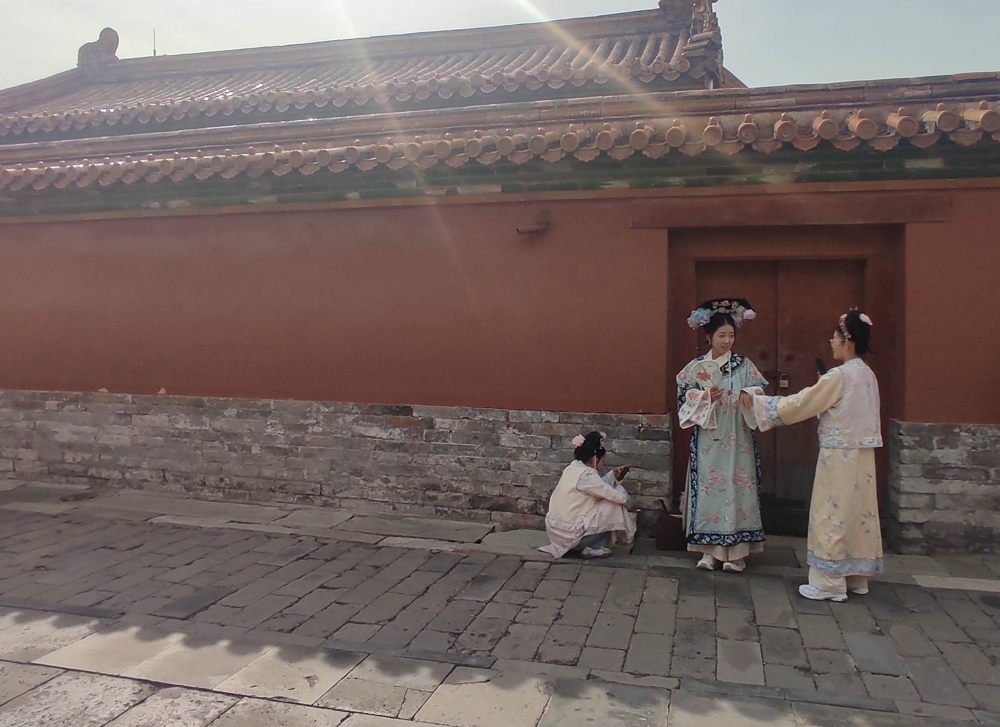

China is a country that takes its space in the fabulous list of countries I entered by land. Moving on land it is definitely my favourite way of travelling and if I had time enough to travel as much as I please, I would definitely travel on land the whole time. The 30 hours journey on the Transmongolian Lines was long but pleasant. Although the cabins have space for four beds (two bunk beds), luckily me and my friend Bob had the chance to not have any other guest in ours and we enjoyed a little bit more of space. Four persons living and sleeping together in a cabin which is probably not bigger then 6 mq for 30 hours would have not been very comfortable, as the brilliant Paul Theroux bitterly described in Riding the iron Rooster (1988), the book I took with me during the whole trip. On the train there is no food, only a steel boiler that provides hot water, therefore all the supplies have to be bought beforehand and carried on the train. The journey was smooth and time went pretty fast and while on the journey we also had the chance to admire a beautiful sunrise from the desert. Once we entered China, we had our first an only stop before Beijing in Hohhot, the capital on inner Mongolia. Cities in China are astonishingly silent (most of cars are electric), shining, over illuminated and relatively clean. What I enjoyed the most was to see all the small businesses opening up the morning after we arrived in Hohhot, on the way to the train station where we had the connection to Beijing which took approximately 4 hours. Once in the capital our time was little and since for both of us it was the first time there we focused on the main attractions that we had the pleasure to visit in the upcoming days. Starting with Tiananmen square, we went to the Great Wall of China, the Temple of Heaven and the Fordibben city.

Who was Kong Qiu and what exactly Confucianism is? Confucius was a Chinese philosopher born in modern Qufu, Shandong in 551 BC. He was born in a family that stood somehow between working class and aristocracy, in a Chinese society that back in time was still very much class-based. He lost his parents at a very young age and after the passing of his mother, he mourned for three years (the amount of time a baby his completely dependent on his parents according to Chinese tradition), which reflects also the same amount of time his proselytes mourned once he passed away. It seems that Confucius was able to gain consideration in ancient China based on the quality of his teaching and that is why he was rewarded with the appointment of certain political positions, including the one of Minister of Crime (which I guess it is something similar to the modern Minister of Justice). Most of Confucius doctrine focuses on responsibility, morality, kindness and sincerity towards other human beings plus other strong ethical values. His teachings also experienced recurring interests in following time periods of history and led to other movements like neo-Confucianism. Confucianism together with Buddhism and Taoism (in particular with the book of Tao te Ching by Laozi), belongs to the three main school of thoughts that influenced modern China.
Mao Zedong is the founder of the People Republic of China, that was founded in 1949 and basically of what modern China today represents with all its technological discoveries, its nationalistic ideals and its high focus on national security and control. Maoism was a doctrine built on solid Marxist-Leninist values and maybe the strongest form of Communism the whole world ever had. Its leader Mao was born in Hunan from a peasant family and really started from the scratch. He built his political ideas while working as librarian in Beijing, became a revolutionary, helped building the Red Army, took part in the guerrilla fare and subsequently became leader of the Chinese communist party (CCP). During the Chinese civil war he helped to kick out the Kuomintang (Nationalist party of China) that sought refuge in Taiwan and became leader of China. His political conduct was extremely harsh and despite of the land redistribution he repressed most of the political opponents, including intellectuals who were sent in the fields and people who tried to manifest their criticism towards Maoism. In 1966 Mao introduced the Cultural Revolution, a movement that was born to repress bourgeoisie and lasted for 10 years, basically until his death. Most of foreign books were destroyed and replaced by the Little Red Book, a book that contained quotations of Mao. The Cultural revolution like most of the revolutions was extremely violent and it concerned an overall death toll that varies from 1 to 2 million people depending on the source. Maoism lasted till the death of his leader in 1976 and things changed when in 1978 his successor Deng Xiaoping came to power, giving the country a more western conduct.
Part of Mao's masterplan for communist China was to destroy its past and in order to do that, he was able to engage part of the Chinese university students to make them fight for more social justice and ideally a more equal Chinese society. This form of paramilitary student organisation was called the Red Guards. The Red Guards became popular when Mao decided to broadcast their manifesto that was seen before as something radical, increasing their popularity and giving them a certain political legitimacy. The Red Guards reached their peak around August 1966 when basically they were present in almost every Chinese city. The Red Guards were responsible for a pretty considerable number of murders, although the numbers as often happens in regards of controversial historical facts, are very different depending on the source. Particularly remarkable in its attempt to destroy Chinese past, it was the initiative to kill the four olds principles of a distant past that Communist China wanted to leave behind. The four olds were old ideas, old costumes, old habits and old culture which took the Red Guards to accomplish a serie of brutal actions including an attack to the cemetery where Confucius was buried.
Deng Xiaoping was the paramount leader of China between 1798 and 1992, the politician that started socialist market economy reforms (does that make sense?) and according to someone, the leader that with his policies reflected most of what nowadays China looks like. Xiaoping came from a peasant family and same as his predecessor Mao had a Marxist-Leninist education. He also joined the CCP, took part in the Chinese civil war and had overall initial good relationship with Mao that went worst after he was first accused, then purged and exiled to a tractor factory for his attitude that was slowly going forward a more capitalistic view. After he came to power Deng Xiaoping carried out a series of political reforms called Boluan Fanzheng ("correcting chaos and returning to normal") in order to distance the country from its radical communist view and to pursuit a more pragmatic path through modernisation and the creation of certain economical zones. Another important decision that was carried by Deng Xiaoping was the introduction of one child policy that reshaped chinese society and demography for the next decades. Its political conduct was overall marked by lights and shadows, like the facts of Tiananmen square protests in 1989 that happened under his administration and a general skepticism that probably did not make Xiaoping as popular as his predecessor Mao.